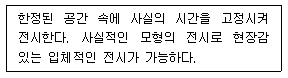
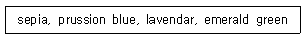
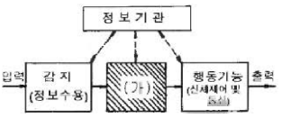
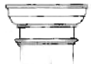

실내건축기사(구) (2007-09-02 기출문제)
1과목: 실내디자인론
1. 개구부에 대한 설명으로 옳지 않은 것은?
- 벽을 차지하지 않는 부분의 총칭이다.
- 한 공간과 인접된 공간을 연결시킨다.
- 가구배치와 동선계획에 영향을 미친다.
- 벽체를 대신하여 건축구조 요소로 사용된다.
(정답률: 73%)

2. 실내계획 중 치수계획에 대한 설명으로 옳지 않은 것은?
- 치수계획은 생활과 물품, 공간과의 적정한 상호관계를 만족시키는 치수체계를 구하는 과정이다.
- 복도의 폭과 넓이는 통행인의 수와 관계없이 넓을수록 좋다.
- 최적치수를 구하는 방법으로는 α를 조정치수라 할 때, 최소치 +α, 최대치 -α, 목표치 ±α가 있다.
- 치수계획은 인간의 심리적, 정서적 반응으로 유발 시킨다.
(정답률: 96%)
3. 오픈 플래닝(open planning)에 관한 설명으로 적합하지 않은 것은?
- 개방된 공간으로 계획하는 것으로 소음이나 시각적 문제는 고려하지 않아도 된다.
- 실내공간에 있어 내부공간의 분할을 최소한으로 나누어 계획하는 것이다.
- 고정된 벽체보다는 가동간막이를 사용하여 공간에 융통성을 부여한다.
- 오픈 플래닝의 장점을 이용하여 공간사용을 접목시킨 것이 원룸시스템(one room system)이다.
(정답률: 93%)
4. 실내디자인의 프로세스 중 아이디어를 스케치 하려고 할 때 쓰이지 않은 작도법은?
- 스크래치 스케치(scratch sketch)
- 러프 스케치(rough sketch)
- 프리핸드 스케치(freehand sketch)
- 프리젠테이션 모델 스케치(presentation model sketch)
(정답률: 70%)
5. 실내디자인의 개념에 대한 설명 중 옳지 않은 것은?
- 인간생활의 쾌적성을 추구하는 디자인 활동이다.
- 실내공간을 환경적, 상업적 공간으로만 완성하는 전문 과정이다.
- 미적, 기능적 공간을 창출하는 디자인 행위이다.
- 다양한 요소를 반영하여 인간환경을 구축하는 작업이다.
(정답률: 89%)
6. 각 요소의 특징과 연결이 어울리지 않는 것은?
- 수직선의 상승감 - 고딕양식의 성당
- 수평선의 평온함 - 기네틱아트
- 곡선의 율동 - 아르누보
- 절선의 비례미 - 한옥의 창살
(정답률: 73%)
7. 가시성을 결정하는 요소가 아닌 것은?
- 대상물의 크기
- 주변과의 대비
- 대상물의 밝기
- 대상물의 실제 무게
(정답률: 97%)
8. 다음 중 점의 조형효과로 틀린 것은?
- 가까운 거리에 있는 점은 삼각형이나 사각형 등과 같은 도형으로 인지된다.
- 공간에 한 점을 두면 집중효과가 생긴다.
- 나란히 있는 점은 간격에 따라 집합, 분리의 효과를 얻는다.
- 많은 점의 근접은 입체로 지각된다.
(정답률: 50%)
9. 다음의 주거공간에 대한 설명 중 옳은 것은?
- 전통 한옥의 공간구조는 남성과 여성의 생활공간이 분리되어 있다.
- 한식 침실이 양식 침실보다 가구의 점유면적이 크다.
- 한식 침실은 소박하고 안정되기 보다는 화려하고 복잡하다.
- 양식 침실이 한식 침실보다 용도면에 있어서 융통성이 크다.
(정답률: 알수없음)
10. 의자의 종류 중 필요에 따라 이동시켜 사용할 수 있는 간이의자로 크지 않으며 가벼운 느낌의 형태를 갖는 것은?
- 체스터필드
- 풀업 체어
- 라운지 체어
- 카우치
(정답률: 95%)
11. 다음 설명은 어떤 전시에 대한 설명인가?

- 파노라마 전시
- 디오라마 전시
- 아일랜드 전시
- 하모니카 전시
(정답률: 79%)
12. 모듈과 그리드 시스템을 적용한 설계에 가장 거리가 먼 건물의 유형은?
- 사무소
- 아파트
- 미술관
- 병원
(정답률: 46%)
13. 전시공간의 조명계획에 대한 설명 중 옳지 않은 것은?
- 실내의 조도 및 휘도 분포가 적당해야 한다.
- 전시물의 대상에 따라 국부조명(spot light)의 방향성, 연색성 등을 고려한다.
- 전체조명과 국부조명의 비율은 1:5 이상이 되도록 한다.
- 전체조명은 보행이나 메모하기에 적당한 범위로 한다.
(정답률: 88%)
14. 주택의 침실계획에 대한 다음 설명 중 옳지 않은 것은?
- 침실의 독립성 확보에 있어서 출입문과 창문의 위치는 매우 중요하다.
- 문이 두 개인 경우 멀리 분사되는 것이 가구배치와 독립성 확보를 위해 보다 효과적이다.
- 입구에서 옷장 등 수납공간까지의 동선을 짧게 하는 것이 좋다.
- 문은 옷을 갈아입는 공간과 똑바로 일치되지 않는 것이 프라이버시 확보를 위해 유리하다.
(정답률: 56%)
15. 디자인 원리에 대한 설명 중 잘못된 것은?
- 리듬의 효과는 음악적 감각이나 조형화된 것으로 청각의 원리가 시각적으로 표현된 것이다.
- 통일은 디자인 대상의 전체에 미적 질서를 부여하는 것으로 모든 형식의 출발점이며 구심점이다.
- 대칭적인 균형은 안정감과 정적인 표현을 연출한다.
- 조화에는 유사와 대비로 분류되며, 시각적으로 동일한 요소들을 통해 이루어지는 조화방법을 대비조화라고 한다.
(정답률: 59%)
16. 인테리어 이미지에 대한 설명 중 틀린 것은?
- 캐쥬얼(Casual)은 자유롭고 편한 이미지를 나타내며, 신선함, 활동감, 즐거움 등이 연출 포인트가 된다.
- 자연스러움(Natural)은 단순하면서 소박함과 따스함이 있는 형태를 기본으로 한다.
- 고저스(Gorgeous)는 호화롭고 사치스런 이미지로 전통적인 표현은 물론 현대적인 표현도 가능하다.
- 댄디(Dandy)는 강하고 분명한 디자인으로 활동감과 약동감을 갖게 한다.
(정답률: 67%)
17. 다음 중 질감에 대한 설명으로 가장 알맞은 것은?
- 질감은 재료의 표면상태에 대한 느낌으로 흡음성과는 상관관계가 없다.
- 시각적으로 인식되는 질감과 촉감으로 인식되는 질감에는 차이가 없다.
- 재료표면이 빛을 흡수하는 정도는 질감에 영향을 미치지 않는다.
- 질감에 영향을 주는 요인에는 시각과 촉감만 작용하는 것은 아니다.
(정답률: 83%)
18. 오피스에서 업무를 수행하는 사람이 업무수행을 효율적으로 하기 위하여 필요한 기가, 가구, 집기를 포함하는 최소 단위의 기능공간은?
- 오피스 랜드스케이프(Office Landscape)
- 시스템 가구(System Furniture)
- 모듈러 시스템(Modular System)
- 워크 스테이션(Work Station)
(정답률: 22%)
19. 다음 중 리듬(rhythm)에 의한 디자인 사례가 아닌 것은?
- 강렬한 붉은 빛의 의자가 반복적으로 배열된 객석
- 교회의 높은 천장고
- 나선형의 계단
- 위쪽의 밝은 색에서 아래쪽의 어두운 색으로 변화하는 벽면
(정답률: 67%)
20. 실내공간의 기본 요소에 대한 설명으로서 잘못된 것은?
- 다른 요소들이 시대와 양식에 의한 변화가 현저한데 비하여 바닥은 매우 고정적이다.
- 천장의 형태는 그 재료와 질감과 함께 실내공간의 음향적인 부분에 영향을 미친다.
- 벽은 수직적 요소이므로 보는 시점의 높낮이에 의한 시각적 특성의 변화가 거의 없다.
- 기둥은 하중에 관계없이 실내에 설치되어 강조적, 상징적요소로도 사용된다.
(정답률: 50%)
2과목: 색채학
21. 분광반사율이 다른 두 가지의 색이 어떤 광원 아래서 같은 색으로 보이는 현상은?
- 메타메리즘
- 등색
- 색지각
- 색순응
(정답률: 45%)
22. 순색과 무채색의 포화도 비율이 순색의 순도를 1로 할 때 순도 1/4이라 함은?
- 순색 30% : 무채색 70%
- 순색 50% : 무채색 50%
- 순색 25% : 무채색 75%
- 순색 75% : 무채색 25%
(정답률: 67%)
23. 다음 중 색채의 밝고 어두운 정도를 나타내는 것은?
- 명도
- 채도
- 색상
- 색입체
(정답률: 87%)
24. 먼셀의 색상환에서 BG는 무슨 색인가?
- 청록
- 연두
- 남색
- 노랑
(정답률: 87%)
25. 흰색 배경의 회색보다 검정색 배경의 회색이 더 밝게 보이는 것은 무슨 대비인가?
- 보색대비
- 채도대비
- 명도대비
- 색상대비
(정답률: 77%)
26. 다음 중 주위가 어두워질 때 가장 늦게까지 잘 보이지는 계통의 색은?
- 청색계통
- 적색계통
- 황색계통
- 자색계통
(정답률: 47%)
27. 다음 색상에 대한 연상으로 일반적이지 않은 것은?
- 노랑 : 여성, 꽃, 종교, 고귀
- 검정 : 암흑, 종교, 장의
- 녹색 : 구호, 안전, 진행
- 주황 : 고압, 경계, 위험
(정답률: 75%)
28. 다음 중 화려하게 느껴지는 색은?
- 채도가 높은 색
- 채도가 낮은 색
- 낮은 명도의 색
- 중간 명도의 색
(정답률: 87%)
29. 오스트발트(Ostwald) 색채조화론에서 보색조화를 나타낸 것은?
- 2 간격 조화
- 4 간격 조화
- 8 간격 조화
- 12 간격 조화
(정답률: 60%)
30. 색의 지각현상에 관한 설명 중 잘못된 것은?
- 난색이 한색 보다 팽창되어 보인다.
- 검정색 배경 위의 고명도 색이 저명도 색보다 명시도가 높다.
- 한색이 난색보다 주목성이 높다.
- 고명도 색이 저명도색보다 팽창되어 보인다.
(정답률: 85%)
31. 문 스펜서의 색채조화론에서 ‘미도는 ( )이상이 되면 그 배색은 좋다.’의 ( )에 들어갈 기준 수치는?
- 0.2
- 0.5
- 0.7
- 0.9
(정답률: 74%)
32. 다음 중 오스트발트(Ostwald)의 색채조화론과 관련이 있는 것은?
- 동일조화
- 스칼라 모먼트
- 등순색 계열의 조화
- 미도
(정답률: 50%)
33. 용도별 실내색체에 관한 다음 설명 중 잘못된 것은?
- 한색계의 색체 공간은 정신적 활동에 적합하다.
- 병원 수술실에 가장 많이 쓰이는 색은 녹색이다.
- 공장에서 안전이 요구되는 부위에는 KS에 규정된 안전 색채를 써야 한다.
- 사무실 벽은 순백색으로 배색한 것이 눈의 피로를 줄여서 좋다.
(정답률: 58%)
34. 다음 유채색과 무채색에 대한 설명 중 잘못된 것은?
- 유채색이란 채도가 있는 색이란 뜻이다.
- 빨강, 노랑 등의 색감을 미세한 정도로 느낄 수 있는 것은 무채색으로 구분한다.
- 무채색은 검정, 백색을 포함하여 그 사이 색을 말한다.
- 반사율이 약 85%인 경우는 흰색, 약 30% 정도이면 회색, 약 3% 정도는 검정이다.
(정답률: 89%)
35. 색채조화론에서 면적의 효과에 대한 설명 중 옳은 것은?
- 작은 면적의 강한 색과 큰 면적의 약한 색은 서로 잘 어울린다.
- 채도가 높고 강한 색은 어떤 면적에도 잘 어울리며 안정감을 준다.
- 채도가 높고 강한 색은 넓은 면적에 사용하면 좋은 효과를 얻을 수 있다.
- 배색에 수반되는 감정효과는 균형점의 색상, 명도, 채도와 관계없이 조화된다.
(정답률: 57%)
36. 컬러 4도 인쇄에서 일반적으로 4도에 포함되지 않는 색은?
- 흰색
- 검정
- 시안
- 노랑
(정답률: 87%)
37. 먼셀기호 5Y 8/10에서 숫자 10은 무엇을 나타내는가?
- 색상
- 명도
- 색조
- 채도
(정답률: 82%)
38. 보라의 색채감정으로 적절하지 않은 것은?
- 고귀
- 우아
- 신비
- 비애
(정답률: 86%)
39. 독일의 심리학자 카츠(David Kats)의 색채 분류에서 ‘맑은 하늘에서 느껴지는 파란색’ 처럼 깊이를 알수 없은 색으로 질감이나 음영을 알 수 없는 색의 분류는?
- 면색
- 표면색
- 공간색
- 간섭색
(정답률: 21%)
40. 다음의 색명은 어떤 기준의 색명인가?

- 계통색명
- 표준색명
- 관용색명
- ISCC-NIST 일반색명
(정답률: 94%)
3과목: 인간공학
41. 다음 중 인간이 기계보다 우수한 기능으로 틀린 것은?
- 다양한 경험을 토대로 하여 의사를 결정한다.
- 주위에 이상하거나 예기치 못한 사건들을 감지한다.
- 반복적인 작업을 신뢰성 있게 수행한다.
- 완전히 새로운 해결책을 찾아낸다.
(정답률: 60%)
42. [그림]과 같은 인간-기계 통합체계를 컴퓨터시스템과 비교할 때 빗금 친 (가) 부분에 해당하는 것으로 옳은 것은?

- 프린터(Printer)
- 중앙처리장치(CPU)
- 감지장치(Sensor)
- 펀치카드(Punch card)
(정답률: 83%)
43. 다음 중 시각표시장치에서 시차(parallax)를 줄이는 방법으로 가장 적절할 것은?
- 지침을 다이얼면과 최소한으로 붙여야 한다.
- 숫자와 눈금을 같은 색으로 칠한다.
- 지침이 계속해서 회전하는 계기의 영점은 3시 방향에 둔다.
- 가능한 한 끝이 둥근 지침을 사용한다.
(정답률: 69%)
44. 조종 장치를 촉감에 의하여 구별할 수 있도록 설계하기 위하여 두께는 최소한 얼마 이상 차이가 나도록 하여야 하는가?
- 0.95mm
- 9.5mm
- 95mm
- 950mm
(정답률: 43%)
45. 같은 밝기의 불빛일 경우 암순응(暗順應)을 촉진하기 위해 사용하는 색으로 가장 적절한 것은?
- 적색
- 백색
- 노란색
- 초록색
(정답률: 44%)
46. 다음 중 음(音)에 관한 단위가 아닌 것은?
- Phon
- Sone
- dB
- lm
(정답률: 68%)
47. 생물체가 자극에 대한 반응을 일으키는 데 필요한 최소한도의 자극의 세기를 나타내는 수치를 무엇이라 하는가?
- 점멸지수(flicker index)
- 역치(threshold)
- 양성전압(positive potential)
- 분극(polarization)
(정답률: 100%)
48. 시각적 표시장치의 유형 중 원하는 값으로부터의 대략적인 편차 또는 고도 등 그 시각적인 변화 반향을 알아보는데 가장 적합한 형태는?
- 지침이동형(moving pointer)
- 지침고정형(moving scale)
- 계수형(digital)
- 그림 표시형(pictogram)
(정답률: 69%)
49. 다음 중 소음에 의한 난청을 방지하기 위한 방법으로 가장 거리가 먼 것은?
- 소음원을 격리시킨다.
- 소음원의 진도수를 4000Hz 전후로 조정한다.
- 주변에 차폐시설을 한다.
- 주변의 배치를 조정한다.
(정답률: 69%)
50. 다음 중 일반적으로 가장 밝아야 할 장소는?
- 병원 간호대
- 화장실
- 호텔의 복도
- 엘리베이터
(정답률: 100%)
51. 다음 중 황금분할(golden section) 혹은 황금비로 옳은 것은?
- 약 1 : 1.618
- 약 1 : 2.145
- 약 1 : 3.1415
- 약 1 : 4.1250
(정답률: 86%)
52. 단위면적당 표면에서 반사 또는 송출되는 광량을 무엇이라 하는가?
- 광속(luminous flux)
- 휘도(luminance)
- 조도(illuminance)
- 반사율(reflectance)
(정답률: 34%)
53. 인체측정치 중 최대집단치를 적용하는 대상으로 볼 수 없는 것은?
- 탈출구의 넓이
- 출입문의 높이
- 그네의 지지 하중
- 선반의 높이
(정답률: 72%)
54. 지각에 영향을 미치는 게스탈트(Gestalt)의 4법칙에 해당하지 않는 것은?
- 근접성의 법칙
- 유사성의 법칙
- 연속성의 법칙
- 다양성의 법칙
(정답률: 55%)
55. 팔, 다리 또는 다른 신체 부위의 동작에서 몸의 중심선을 향하는 이동 동작을 무엇이라 하는가?
- 신전(extention)
- 내전(adduction)
- 외전(abduction)
- 상향(supination)
(정답률: 88%)
56. 다음 중 양립성의 종류가 아닌 것은?
- 공간적 양립성
- 개념적 양립성
- 시간적 양립성
- 운동 양립성
(정답률: 69%)
57. Miller는 인간의 절대식별 한계를 “magical number 7호”라 하였는데 이것의 의미로 옳은 것은?
- 장기기억의 한계
- 작업기억의 한계
- 감각보관의 한계
- 감각수용기의 한계
(정답률: 77%)
58. 다음 중 인간의 눈 구조에서 색을 구별하게 하는 요소는?
- 각막
- 수정체
- 간상세포
- 추상세포
(정답률: 71%)
59. 음의 한 성분이 다른 성분에 대한 감수성을 감소시키는 현상을 무엇이라 하는가?
- resonance
- masking
- interference
- damping
(정답률: 86%)
60. 다음 중 KS 규격에서 규정한 안전색의 종류와 표시사항의 용도가 잘못 연결된 것은?
- 적색 - 금지 표시
- 녹색 - 피난 표시
- 청색 - 지시 표시
- 황색 - 방사능 표시
(정답률: 64%)
4과목: 건축재료
61. 목재의 인화점은 몇 ℃ 정도인가?
- 100℃
- 160℃
- 240℃
- 450℃
(정답률: 60%)
62. 굳지 않은 콘크리트의 성질을 표시하는 용어 중 콘시스텐시에 의한 부어넣기의 난이도 정도 및 재료분리에 저항하는 정도를 나타내는 것은?
- 플라스티시티
- 피니셔빌리티
- 펌퍼빌리티
- 워커빌리티
(정답률: 50%)
63. 중용역포틀랜드시멘트에 대한 설명 중 틀린 것은?
- C3S나 C3A가 적고, 장기강도를 지배하는 C2S를 많이 함유한 시멘트이다.
- 수화속도를 지연시켜 수화열을 작게 한 시멘트이다.
- 건조수축이 작고 건축용 매스콘크리트에 사용된다.
- 내황산염성이 작기 때문에 댐공사에는 사용이 불가능하다.
(정답률: 78%)
64. 다음 중 열경화성 수지에 속하지 않는 것은?
- 멜라민수지
- 요수수지
- 폴리에틸렌수지
- 에폭시수지
(정답률: 65%)
65. 다음의 동(銅)에 대한 설명 중 옳지 않은 것은?
- 연성이고 가공성이 풍부하여 판재, 선, 봉 등으로 만들기가 용이하다.
- 내알칼리성이 우수하여 시멘트, 콘크리트에 접하는 장소에 사용이 용이하다.
- 비자성체이며 전기 전도율이 크다.
- 맑은 물에서는 녹이 나지 않으나 염수에서는 부식된다.
(정답률: 86%)
66. 다음의 알루미늄에 관한 설명 중 틀린 것은?
- 탄성률은 강재와 동일하나 내화성이 부족하여 구조 재료로 사용이 곤란하다.
- 대기 중에서는 부식이 쉽게 일어나지 않지만 알칼리나 해수에는 약하다.
- 상온에는 판, 선으로 압연가공하면 경도와 인장강도가 증가하고 연신율이 감소한다.
- 융점이 낮기 때문에 용해주조도가 좋다.
(정답률: 25%)
67. 미장재료 중 고온소성의 무수석고를 특별한 화학처리를 한 것으로 킨즈시멘트라고도 불리우는 것은?
- 순석고 플라스터
- 혼합석고 플라스터
- 보드용 석고 플라스터
- 경석고 플라스터
(정답률: 58%)
68. 목재의 결점 중 벌채시의 충격이나 그 밖의 생리적 원인으로 인하여 세로축에 직각으로 섬유가 절단된 형태를 의미하는 것은?
- 수지낭
- 미숙재
- 옹이
- 컴프레션페일러
(정답률: 36%)
69. 다음 중 흡수율이 가장 작은 점토 제품은?
- 석기
- 자기
- 도기
- 토기
(정답률: 72%)
70. 다음의 접착제에 관한 설명으로 틀린 것은?
- 요소수지 접착제는 목공용에 적당하며 내수합판의제조에 사용된다.
- 에폭시수지 접착제는 금속, 플라스틱, 도자기, 유리, 콘크리트 등의 접합에 사용된다.
- 실리콘수지 접착제는 내수성은 대단히 크나 열에는 약하다.
- 멜라민수지 접착제는 내수성 등이 좋고 목재의 접합에 사용된다.
(정답률: 58%)
71. 페인트 도장에 있어서 건조제를 지나치게 많이 넣을 경우 정벌칠 결과 나타나는 주된 현상은?
- 블로킹(blocking)발생
- 도막의 흐름성(sagging) 발생
- 도막에 균열 발생
- 접착력 증가
(정답률: 77%)
72. 일반적으로 단열재에 습기나 물기가 침투하면 어떤 현상이 발생하는가?
- 열전도율이 높아져 단열성능이 좋아진다.
- 열전도율이 높아져 단열성능이 나빠진다.
- 열전도율이 낮아져 단열성능이 좋아진다.
- 열전도율이 낮아져 단열성능이 나빠진다.
(정답률: 77%)
73. 목재의 일반적인 성질에 관한 설명으로 옳지 않은 것은?
- 섬유포화점 이상의 함수상태에서는 함수율의 증감에도 불구하고 신축을 일으키지 않는다.
- 섬유포화점 이상에서는 함수율이 증가할수록 강도는 감소한다.
- 기건상태란 목재가 통상 대기의 온도, 습도와 평형된 수분을 함유한 말한다.
- 섬유방향에 따라서 전기전도율은 다르다.
(정답률: 59%)
74. 석재사용상의 주의점에 대한 설명 중 옳지 않은 것은?
- 외벽 특히 콘크리트 표면 첨부용 석재는 연석을 사용하여야 한다.
- 동일건축물에는 동일석재로 시공하도록 한다.
- 석재를 구조재로 사용할 경우 직압력재로 사용하여야 한다.
- 중량이 큰 것은 높은 곳에 사용하지 않도록 한다.
(정답률: 53%)
75. 골재 중에 포함되어 있는 유해물질이 아닌 것은?
- 유기불순물
- 염분
- 석탄입자
- 화강암
(정답률: 57%)
76. 연질타일계 바닥재에 대한 설명 중 옳지 않은 것은?
- 고무계 타일은 내마모성이 우수하고 내수성이 있다.
- 리놀륨계 타일은 내유성이 우수하고 탄력성이 있으나 내알칼리성, 내마모성, 내수성이 약하다.
- 전도성 타일은 정전기 발생이 우려되는 반도체, 전기 전자제품의 생산장소에 주로 사용된다.
- 아스팔트 타일은 내마모성과 내유성이 우수하여 실내 주차장 바닥재로 많이 사용된다.
(정답률: 48%)
77. 미장재료 중 돌로마이트 플라스터에 대한 설명으로 옳지 않은 것은?
- 보수성이 크고 응결시간이 길다.
- 소석회에 모래, 해초풀, 여물 등을 혼합하여 바르는 미장재료이다.
- 회반죽에 비하여 조기강도 및 최종강도가 크고 착색이 쉽다.
- 여물을 혼입하여도 건조수축이 크기 때문에 수축균열이 발생한다.
(정답률: 48%)
78. 다음의 점토 제품에 관한 설명 중 옳은 것은?
- 1종 점토벽돌의 흡수율은 13% 이하이어야 한다.
- 테라코타는 주로 장식용으로 사용되며 석재보다 경량이고, 거의 흡수성이 없다.
- 표준형 내화벽돌의 크기는 250mm × 120mm × 60mm 이다.
- 평타일의 표면 넓이가 160cm2이하인 것을 모자이크 타일이라고 한다.
(정답률: 77%)
79. 미장재료 중 소석회는 대기 중 어느 것과 작용해서 경화하는가?
- O2
- CO2
- NO2
- H2
(정답률: 36%)
80. 강의 열처리 방법에 대한 설명으로 옳지 않은 것은?
- 풀림 : 강을 연화하거나 내부응력을 제거할 목적으로 실시한다.
- 불림 : 조직을 개선하고 결정을 미세화하기 위해 실시한다.
- 담금질 : 고온으로 가열하여 소정의 시간동안 유지한 후에 냉수, 온수 또는 기름에 담가 냉각하는 처리를 말한다.
- 뜨임질 : 경도를 증가시키고 연성과 인성을 작게하기 위해 실시한다.
(정답률: 56%)
5과목: 건축일반
81. 다음 중 보행진동에 대하여 가장 저항성이 크고 마루널의 접합에 가장 좋은 쪽매 방법은?
- 맞댄 쪽매
- 제혀 쪽매
- 빗 쪽매
- 딴혀 쪽매
(정답률: 63%)
82. 난간동자를 세워댄 난간을 말하며, 장식겸 난간으로 사용되는 것은?
- 멍에
- 부란
- 두겁대
- 챌판
(정답률: 29%)
83. 다음 중 플라잉 버트레스(flying buttress)와 가장 관계가 깊은 양식은?
- 로마네스크(Romanesque)양식
- 로마(Rome)양식
- 르네상스(Renaissance)양식
- 고딕(Gothic)양식
(정답률: 90%)
84. 아래 그림은 어느 오더(order) 형식인가?

- 터스칸(Tuscan)식
- 콤포지트(Composit)식
- 이오닉(Ionic)식
- 코린티안(Corinthian)식
(정답률: 25%)
85. 건축허가 등을 함에 있어서 미리 소방본부장 또는 소방서장의 동의를 받아야 하는 건축물 등에 속하지 않는 것은?
- 연면적이 330m2인 건축물
- 연면적이 100m2인 위험물 제조소
- 바닥면적이 200m2인 무창층이 있는 건축물
- 바닥면적이 100m2인 지하층이 있는 건축물
(정답률: 53%)
86. 건축물의 내무 마감재료를 방화상 지장이 없는 재료로 하여야 하는 대상건축물이 아닌 것은?
- 판매시설의 용도에 쓰이는 건축물로서 당해 용도에 쓰이는 거실의 바닥면적의 합계가 200m2인 건축물
- 위험물저장 및 처리시설
- 업무시설 중 오피스텔의 용도에 쓰이는 건축물로서 2층의 당해 용도에 쓰이는 거실바닥면적의 합계가 300m2인 건축물
- 6층의 거실 바닥면적의 합계가 500m2인 건축물
(정답률: 25%)
87. 다음 중 철근콘크리트구조에서 철근의 피복두께가 가장 커야 할 곳은?
- 벽
- 기둥
- 보
- 기초
(정답률: 27%)
88. 피뢰설비에 관한 설명 중 틀린 것은?
- 높이 20m 이상인 건축물에 설치한다.
- 위험물저장 및 처리시설에 설치하는 피뢰설비는 한국산업규격이 정하는 보호등급II 이상이어야 한다.
- 돌침은 건축물의 맨 윗부분으로부터 25cm 이상 돌출시켜 설치한다.
- 피뢰설비의 재료는 최소 단면적이 피복이 없는 동선을 기준으로 수뢰부의 경우 16mm2 이상이어야 한다.
(정답률: 16%)
89. 작품으로는 바르셀로나 파빌리온, 판스워스 하우스 등이 있으며, “자유로운 평면과 명쾌한 구조는 서로 뗄수 없는 것이다. 구조는 전체의 골격이며, 자유로운 평면을 가능하게 해 준다.” 라고 말한 사람은?
- 미스 반 델 로에
- 프랭크 로이드 라이트
- 월터 그로피우스
- 르 코르뷔지에
(정답률: 54%)
90. 소방시설의 관계가 서로 잘못 짝지어진 것은?
- 소화설비 - 스프링클러설비
- 경보설비 - 자동화재탐지설비
- 피난설비 - 유도등 및 유도표지
- 소화활동설비 - 옥내소화전설비
(정답률: 72%)
91. 철근콘크리트조에서 철근의 이음에 대한 설명으로 옳은 것은?
- 철근의 이음 위치는 응력의 작용부위와 관계없이 시공상편의에 따라 결정하여 시공능률을 높인다.
- 겹침이음에서 이음길이는 콘크리트의 강도, 철근의 강도에 관계없이 일정하게 한다.
- 맞댄용접이음은 철근을 맞대고 철근토막, ㄱ형강 또는 강판을 덧대고 용접하는 것이다.
- 일반적으로 D35를 초과하는 철근은 겹침이음을 하지 않아야 한다.
(정답률: 28%)
92. 다음의 전통 장식품 가운데 사용 용도가 다른 하나는?
- 병풍
- 고비
- 발
- 방장
(정답률: 28%)
93. 계단 및 계단참의 너비(옥내계단에 한함)가 최소 150cm 이상이어야 하는 것은?
- 초등학교의 학생용 계단
- 집회장의 계단
- 도매시장의 계단
- 바로 윗층의 거실의 바닥면적의 합계가 200m2 이상인 지하층의 계단
(정답률: 60%)
94. 6층 이상의 거실 면적의 합계가 9000m2 이상인 의료시설 중 병원의 승용승강기의 설치 기준 대수로 옳은 것은? (단, 15인승 승용승강기를 기준으로 한다.)
- 2대
- 3대
- 4대
- 5대
(정답률: 22%)
95. 목구조의 가새에 대한 설명 중 옳지 않은 것은?
- 목조벽체를 수평력에 견디게 하고 안정한 구조로 하기 위한 것이다.
- 가새의 경사는 45°에 가까울수록 유리하다.
- 주요 건물에서는 한 방향 가새로만 하지 않고 X자형으로 한다.
- 중요한 곳은 가새보다 버팀대를 설치하는 것이 강력하다.
(정답률: 36%)
96. 다음 중 르네상스 건축양식에 관한 설명으로 옳지 않은 것은?
- 그리스와 로마의 고전건축양식을 재현하고자 하였다.
- 신중심의 세계관에 바탕을 두었으며 수직성이 강조 되었다.
- 교회건축 외에 다양한 공공건물 및 궁전주택(Palazzo) 등이 건축되었다.
- 비례와 미적 대칭 등을 중시하였다.
(정답률: 48%)
97. 다음의 조적식 구조에 대한 설명 중 옳지 않은 것은?
- 쌓기방식은 벽체의 두께를 결정하는 요소가 아니다.
- 보강블록조의 경우에는 줄눈을 통줄눈으로 처리한다.
- 벽돌조의 내력벽의 두께는 벽높이의 1/24 이상으로 한다.
- 벽체의 백화현상을 방지하기 위하여 벽돌면 파라핀도료를 사용한다.
(정답률: 31%)
98. 다음의 철근콘크리트 슬래브에 관한 설명 중 옳지 않은 것은?
- 1방향 슬래브에서는 장변방향으로 주근을, 단변방향으로 부근을 배치한다.
- 1방향 슬래브의 두께는 최소 100mm 이상으로 한다.
- 1방향 슬래브에서는 정철근 및 부철근에 직각방향으로 수축 온도철근을 배치하여야 한다.
- 4변에 의해 지지되는 2방향 슬래브 중에서 단변에 대한 장변의 비가 2배를 넘으면 1방향 슬래브로 해석한다.
(정답률: 20%)
99. 배연설비의 설치와 구조기준에 대한 설명으로 옳지 않은 것은?
- 6층 이상의 건축물로서 의료시설의 용도에 쓰이는 거실에는 배연설비를 설치하여야 한다.
- 6층 이상의 건축물로서 업무시설의 용도에 쓰이는 거실에는 배연설비를 설치하여야 한다.
- 배연구는 예비전원에 의하여 열 수 있도록 하여야 한다.
- 배연구는 연기(열)감지기에 의하여 자동개폐되는 구조로 하되 손으로는 개폐가 불가능하여야 한다.
(정답률: 70%)
100. 문화 및 집회시설 중 공연장의 개별 관람석의 바닥면적이 660m2일 때 바깥으로의 출구의 유효너비의 합계는 최소 얼마 이상으로 하여야 하는가?
- 1.98m
- 3.30m
- 3.96m
- 5.94m
(정답률: 40%)
6과목: 건축환경
101. 다음 중 공기선도에 표기되지 않는 지표는?
- 습구온도
- 산소 함유량
- 수분 함유량
- 노점온도
(정답률: 34%)
102. 열전도저항이 0.4m2h℃/kcal인 벽체의 양측표면 온도가 각각 20℃, 10℃일 때, 벽면적 10m2를 통해 하루 동안 전도되는 열량은?
- 2,000 kcal
- 4,000 kcal
- 6,000 kcal
- 8,000 kcal
(정답률: 19%)
103. 자연환기에 관한 설명 중 옳은 것은?
- 자연환기는 외부풍압의 작용에 의해서만 이루어진다.
- 환기량은 개구부의 면적에 반비례한다.
- 환기량은 실내의 압력차의 제곱근에 비례한다.
- 연돌효과는 자연환기와는 무관하다.
(정답률: 56%)
104. 방음대책 중 옳지 않은 것은?
- 방음벽 설치
- 공장건물 내벽의 흡음처리
- 차음성 감소에 의한 소음조절
- 거리감쇠
(정답률: 56%)
1⑤. 조도에 관한 설명 중 틀린 것은?
- 조도는 피도면 경사각의 sine 값에 비례한다.
- 조도는 광도에 비례한다.
- 조도는 광원으로부터 떨어진 거리의 제곱에 반비례 한다.
- 입사과옥의 면적당 밀도가 높을수록 조도는 커진다.
(정답률: 12%)
106. 색의 물리적 특성에 관한 다음 설명 중 틀린 것은?
- 노랑색 페인트는 파랑색을 흡수하고 빨강, 노랑 및 녹색을 반사한다.
- 모든 종류의 안료를 혼합하면 검정색이 된다.
- 흰색의 반사율은 0.8 이상이다.
- 명도(明渡)는 반사율로 환산한다.
(정답률: 42%)
107. 잔향시간에 관한 설명으로 거리가 먼 것은?
- 잔향시간을 이용하면 대상 실내의 평균 흡음율을 측정할 수 있다.
- 반사음과 직접음의 양을 측정하는 데 사용되는 것이 일반적이다.
- 음에너지의 밀도가 원음의 크기와 비교해서 1/1000000로 감소하는데 소요되는 시간이다.
- 잔향시간이란 실내에서 음원을 끈 순간부터 음압레벨이 60dB 감소할 때까지 걸리는 시간이다.
(정답률: 22%)
108. 다음의 공조방식 중에서 에너지절약 하는데 가장 불리한 것은?
- 단일덕트방식
- 이중덕트방식
- 가변풍량방식
- 팬코일유니트방식
(정답률: 30%)
109. 흡수식 냉동기의 특징으로 옳은 것은?
- 흡수제와 흡수작용에 의해서 냉동을 행한다.
- 소음 및 진동이 작다.
- 온수공급도 행할 수 있다.
- 동일 용량의 압축식과 비교시 냉각탑의 냉동능력이 작아도 된다.
(정답률: 15%)
110. 물질의 이동없이 온도가 다른 일정한 물체 사이 에서 고온의 분자로부터 저온의 분자로 전달되는 열의 형태는?
- 전도(Conduction)
- 대류(Convection)
- 복사(Radiation)
- 방사(Emission)
(정답률: 79%)
111. 다음 건축재료 중 열전도율이 가장 높은 것은?
- 동
- 보통콘크리트
- 유리
- 목재
(정답률: 43%)
112. 15℃ 공기 중에서 500Hz의 음의 파장은 약 몇 cm인가?
- 50
- 60
- 70
- 80
(정답률: 24%)
113. 총광속이 2,000 lumen인 구형 점광원으로부터 수직방향으로 2m 떨어진 지점의 조도는?
- 40 [lx]
- 50 [lx]
- 60 [lx]
- 70 [lx]
(정답률: 31%)
114. 원심력에 의해 유체를 송출시키는 펌프는?
- 제트펌프
- 플런저펌프
- 기포펌프
- 볼류트펌프
(정답률: 36%)
115. 마스킹(masking) 효과에 관한 설명으로 옳은 것은?
- 옆벽 사이를 왕복 반사하여 독특한 음색이 울리는 현상
- 크고 작은 두 소리를 동시에 들을 때 큰 소리만 듣고 작은 소리는 듣지 못하는 현상
- 일정한 크기의 음을 갑자기 멈출 때 그 음이 수 초간 남아 있는 현상
- 입사음의 진동수가 벽의 진동수와 일치되어 같은 소리를 내는 현상
(정답률: 60%)
116. 온열환경 평가지표 중 유효온도는 어떠한 조건을 기준으로 이와 동일한 온열감을 갖도록 작성된 것인가?
- 상대습도 50%, 기류속도 0m/s
- 상대습도 50%, 기류속도 1m/s
- 상대습도 100%, 기류속도 0m/s
- 상대습도 100%, 기류속도 1m/s
(정답률: 27%)
117. 단일벽체의 투과손실에 대한 설명을 옳지 않은 것은?
- 벽체의 면밀도가 증가할수록 투과손실은 커진다.
- 주파수가 커질수록 투과손실은 커진다.
- 투과손실은 벽체의 면밀도와 주파수의 곱의 대수값에 비례한다.
- 중고주파수역에서는 일치효과에 의해 투과손실이 증가한다.
(정답률: 24%)
118. 소음의 크기 등을 나타내는데 사용되는 단위는?
- cd
- dB
- kcal
- ppm
(정답률: 80%)
119. 다음 중 자연환기를 용이하게 하기 위한 건물구조가 아닌 것은?
- Windscoop
- Pantheon
- 한옥의 대청
- lgloo
(정답률: 75%)
120. 인체에 영향을 미치는 온열환경 요소로 거리가 먼 것은?
- 분진
- 건구온도
- 상대습도
- 기류
(정답률: 57%)